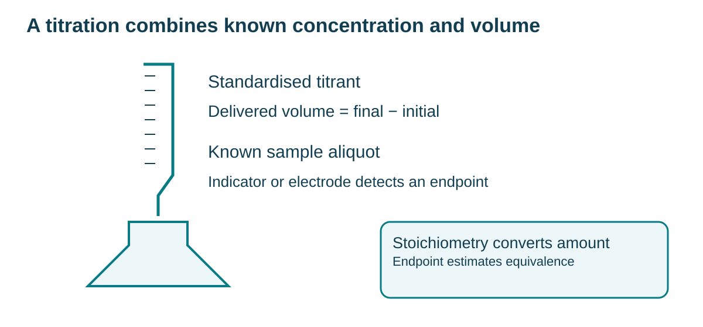
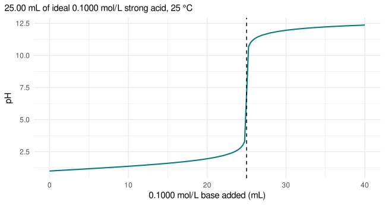
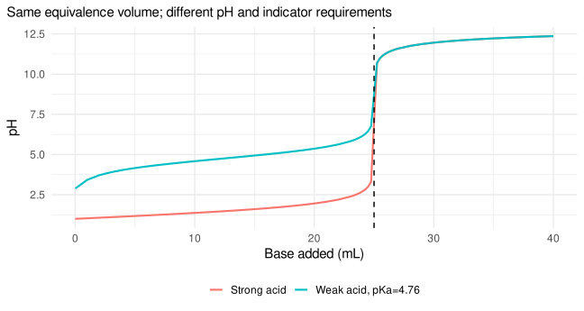
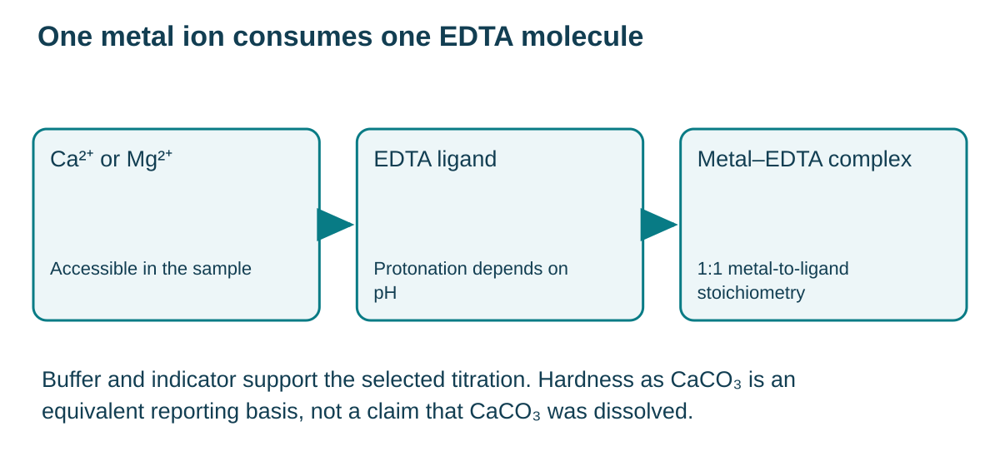
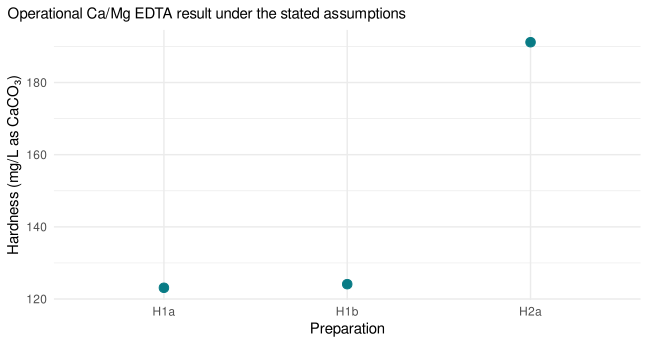

library(readr)
library(dplyr)
library(ggplot2)
curve <- read_csv("data/course/acid-titration.csv", show_col_types = FALSE)
ggplot(curve, aes(volume_ml, ph)) +
geom_line() +
labs(x = "0.1000 mol/L base added (mL)", y = "pH") +
theme_minimal()
c_acid <- 0.1000 * 25.00 / 25.00
c_acidEquilibrium and titration
Use reaction stoichiometry and a justified endpoint
Interactive experiment
Explore the browser demo: How does the chosen endpoint differ from stoichiometric equivalence? Predict first, change one condition, then explain the result. Export a CSV to reproduce one calculation or plot in R.
Use a reaction to count analyte
In a titration, a standardised reagent reacts with a known sample portion. Its concentration and delivered volume establish the amount consumed. The chemical reaction converts that amount to analyte amount. A signal change identifies an endpoint intended to estimate the stoichiometric equivalence point. The two are related but not identical by definition.
You will calculate a strong-acid concentration, inspect pH curves, and report an EDTA hardness result with its stated equivalent basis.

Read the initial and final burette positions. Delivered volume is their difference, not the final reading alone. Remove any justified method-blank consumption on the same volume basis. Titrant concentration must be established: we supply a standardised value rather than assuming a nominal bottle label is exact. Meniscus reading, transfer, standardisation and endpoint detection all contribute uncertainty.
Strong acid and base give a simple amount balance
For \(\mathrm{H^++OH^-\rightarrow H_2O}\), the equivalence condition is \(n_{acid}=n_{base}\). With an acid aliquot \(V_a\) and standardised base concentration \(c_b\), \(c_a=c_bV_{eq}/V_a\) for this 1:1 reaction.
The example uses 25.00 mL acid and 0.1000 mol/L base. A supplied endpoint estimate of 25.00 mL gives 0.1000 mol/L acid. Volumes can be in the same unit in their ratio; converting to amounts in mol requires litres.

Before equivalence, excess acid controls pH; after it, excess base does. Near neutrality the water equilibrium matters, so a naive subtraction followed by -log10(0) fails. The generator includes water autoionisation and charge balance at 25 °C. At equivalence this ideal strong-acid/strong-base system has pH 7; that is not a universal titration rule.
An endpoint is an estimate with a procedure
The steep part makes a small volume change observable. An indicator changes colour over a pH interval; choose one whose transition is appropriate to the curve and desired endpoint accuracy. An electrode gives a series from which an endpoint algorithm can be defined. A slope maximum is a useful exploratory check, not a proof of a chemically correct endpoint.
slopes <- data.frame(
midpoint_ml = (head(curve$volume_ml, -1) + tail(curve$volume_ml, -1)) / 2,
ph_per_ml = diff(curve$ph) / diff(curve$volume_ml))
ggplot(slopes, aes(midpoint_ml, ph_per_ml)) +
geom_line() +
labs(x = "Midpoint of addition interval (mL)", y = "Change in pH per mL") +
theme_minimal()diff() subtracts consecutive values. Divide by the actual volume difference: our additions are more closely spaced near equivalence. Treating every row as one millilitre would give a distorted derivative. Differencing also amplifies measurement noise, so a real procedure needs a specified endpoint method.

For a weak acid, its conjugate base affects pH at equivalence. Before equivalence a buffer region can appear. The comparison below uses the same initial amount and base, with supplied pKa 4.76 for the weak acid.

The equivalent amount follows stoichiometry; pH follows the equilibrium composition. A weaker acid does not automatically require less base if its initial amount is the same. Use the curve to reason about indicator choice, not to redefine the reaction stoichiometry.
EDTA counts metal equivalents
EDTA forms a 1:1 complex with each accessible metal ion in this simplified hardness exercise. Its protonation and the metal’s competing reactions affect the effective binding under the chosen conditions. A pH buffer supports a large enough conditional formation constant and an appropriate indicator response. Merely writing the overall formation constant is not enough to establish performance at every pH.

Assume the supplied titration selectively counts Ca and Mg under its specified buffer/indicator conditions. The combined amount is reported as CaCO₃, using 100.09 g/mol. This does not identify Ca and Mg individually or establish that carbonate is present. Other accessible metals or masked species can change which quantity the procedure measures.
hardness <- read_csv("data/course/edta.csv", show_col_types = FALSE) |>
mutate(delivered_ml = final_burette_ml - initial_burette_ml,
corrected_ml = delivered_ml - blank_ml,
moles_metal = edta_mol_l * corrected_ml / 1000,
hardness_mg_l_CaCO3 = moles_metal * 100.09 * 1000 /
(sample_ml / 1000))
hardness
write_csv(hardness, "output/hardness.csv")H1a delivers 6.20 mL; subtracting the 0.05 mL blank leaves 6.15 mL. At 0.01000 mol/L this is \(6.15\times10^{-5}\) mol in 50.00 mL sample, or 123.11 mg/L as CaCO₃. H1b is another preparation of H1, not another independently obtained water.

Practical and transfer
Report the acid concentration, pH curve, finite-difference interpretation and three hardness results. Explain which volume is an endpoint estimate and why “pH 7” is not a general endpoint rule. List the assumptions connecting EDTA consumption to Ca/Mg hardness and one relevant source of uncertainty beyond repeatability.
A new 25.00 mL water sample consumes 4.10 mL EDTA after the initial/final burette subtraction. A matched blank consumes 0.10 mL; EDTA is 0.01000 mol/L. Calculate hardness, then predict the direction of error from forgetting the blank.
Numerical and chemical checks
Corrected volume is 4.00 mL, giving 160.14 mg/L as CaCO₃. Omitting the blank biases the result high in this consumption model. Supplied results: H1a 123.11, H1b 124.11 and H2a 191.17 mg/L as CaCO₃. A weak-acid equivalence point can have pH above 7 despite 1:1 neutralisation.
Selected Harris and Lucy reading: selected equilibrium and titration topics. Read by topic; the planned course edition is not yet confirmed.
Slides · Course project · R reference
Previous: Calibration and quality control · Next: Electrodes and potentiometry